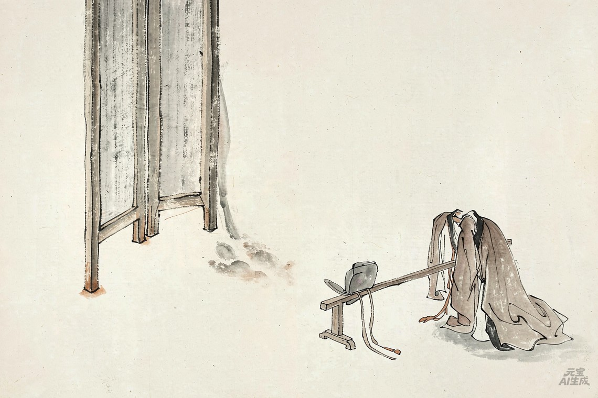
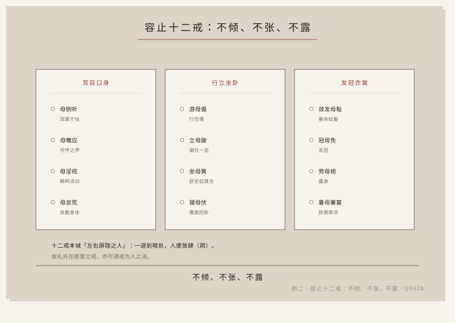

曲礼上 · 一·四十四 · 第 42 课
这一节是一串容止之戒：不侧耳偷听，不高声应答，不流动斜视，不放散身体；行走不倨慢，站立不偏倚，坐不张腿如箕，卧不覆面；头发不垂如假髻，冠不脱，劳不袒，暑不掀裳。
说什么事：毋侧听，毋噭应，毋淫视，毋怠荒；游毋倨，立毋跛，坐毋箕，寝毋伏；敛发毋髢，冠毋免，劳毋袒，暑毋褰裳。
落在哪一层：教。上节讲进退，这节讲站在那儿时全身的十二个不许。
为何编在此位：退有节，立亦有节；一节收口，一节开口，都是身体的礼。
【经】毋側聽，毋噭應，毋淫視，毋怠荒。遊毋倨，立毋跛，坐毋箕，寢毋伏。斂髮毋髢，冠毋免，勞毋袒，暑毋褰裳。
侧听 郑注：「嫌探人之私也。侧听，耳属于垣。」
噭应 郑注：「噭，号呼之声也。」疏：「应答宜徐徐而和，不得高急。」
淫视 郑注：「淫视，睇眄也。」疏：「目当直瞻视，不得流动邪盻。」
怠荒 郑注：「放散身体也。」
倨、跛、箕、伏 郑注：「跛，偏任也。」「伏，覆也。」疏：「箕谓舒展两足，状如箕舌也。」
髢、免、袒、褰 郑注：「髢，髲也，毋垂余如髲也。免，去也。褰，袪也。」疏：「暑虽炎热，而不得褰袪取凉也。」
不侧耳偷听，不高声应答，不流动斜视，不放散身体。行走不倨慢，站立不偏倚一足，坐不张腿如箕，卧不覆面。头发收敛不垂如假髻，冠不脱去，劳倦不袒露，暑热不掀裳。
十二戒，一半管耳目口，一半管四肢与衣冠。礼在此只做一件事：把身体收在「正」上——不倾、不张、不露。
第一层 侧听与淫视：耳目是最会越界的 郑注「耳属于垣」四字极妙：侧听时耳朵几乎贴到墙上。淫视是「流动邪盻」。两戒同一理：耳目可以去，但不许偷偷去。
第二层 噭应与怠荒：声与身都不许放 噭是号呼之声，怠荒是「放散身体」。一放声、一放身，都是把自己的存在扩到别人身上。
第三层 倨、跛、箕、伏：四种「偏」 倨是行而慢，跛是「偏任」一足，箕是张腿如箕舌，伏是覆面而卧。四者都是失了「中」：偏在一侧、偏在一处。
第四层 髢、免、袒、褰：衣冠是最后一道 垂发如髲、脱冠、袒身、掀裳，四样都是「解」。礼在暑与劳两处最见力：热也要穿衣，累也不袒——不是不知热，是不以热为理由。
第五层 疏末一句最要紧 「然上诸事条目，诫侍者左右屏隐之人也……亦可通戒为人之法。」——这十二戒本是给那些退到屏后、无人看管的人说的：一退到暗处，人就容易放肆。礼预先在那里立了规矩。
与今日何干 今日的侧听是偷看手机、探听私聊；噭应是公共场合大声通话；箕坐是摊在座位上。此节不必照搬衣冠，取「不倾、不张、不露」三字即可。
| 左 | 右 |
|---|---|
| 毋侧听 | 嫌探人之私，耳属于垣 |
| 毋噭应 | 号呼之声；应答宜和 |
| 毋淫视 | 睇眄；目当直瞻 |
| 毋怠荒 | 放散身体 |
| 游毋倨，立毋跛 | 慢；偏任 |
| 坐毋箕，寝毋伏 | 舒足如箕舌；覆也 |
| 敛发毋髢，冠毋免 | 不垂如髲；不去冠 |
| 劳毋袒，暑毋褰裳 | 不以劳暑为辞 |

